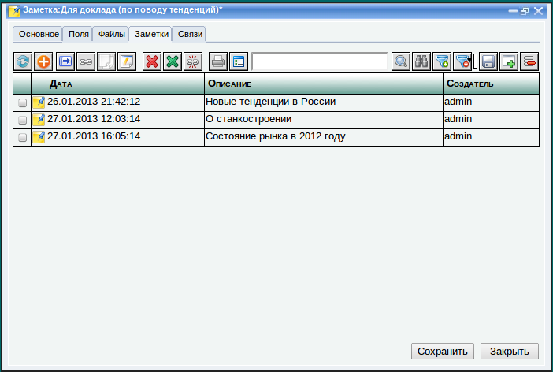
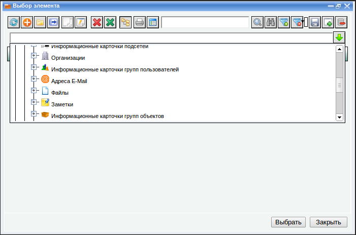
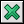
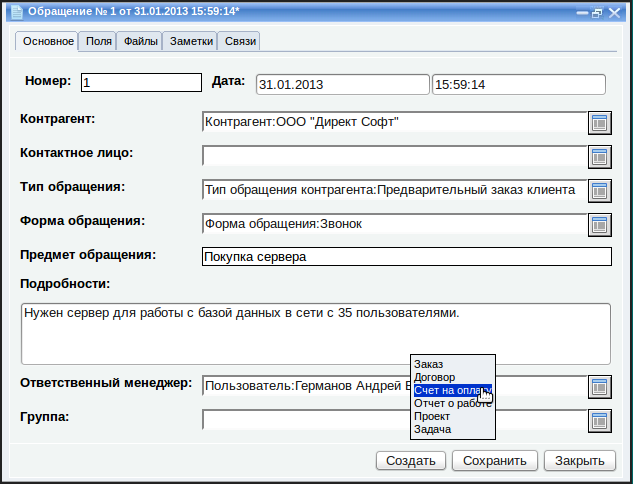
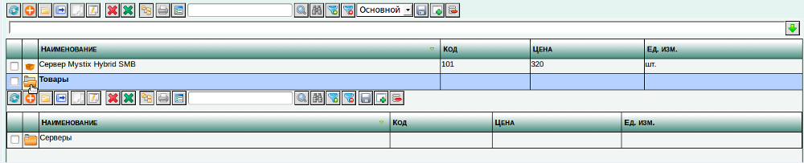

Основы работы
При работе с программой вы в основном будете иметь дело со списками
объектов (справочников и документов). Большинство из этих списков
вынесено в окно "Мои дела", остальные находятся в меню "Справочники" и
"Документы".
Вы будете добавлять новые элементы в списки, редактировать их, связывать
между собой и производить множество других действий. В зависимости
от своей природы, каждый объект имеет свои параметры. Например у
элемента справочника "Контрагент" одни поля, а у документа "Заказ"
другие. Однако у всех объектов много общего и именно это общее мы
рассмотрим в этом разделе. Мы рассмотрим это на примере объектов
"Заметка" и "Файл", которые находятся на соответствующих закладках в
окне "Мои дела". В дальнейшем мы увидим что можно связывать заметки и
файлы с любыми другими объектами (контрагентами, заказами, задачами,
отчетами о работе). С помощью лишь заметок и файлов можно
использовать программу как записную книжку и как электронный архив
документов. Связав файлы и заметки между собой и проявив определенную
фантазию, можно организовать простейшую систему документооборота.
Работа с отдельными объектами
Чтобы создать новый объект, например, заметку, перейдите на закладку "
Заметки" и нажмите кнопку "
Добавить" на панели инструментов

. Появится окно редактирования новой заметки.
У любого объекта, создаваемого в программе "ЛВА Управление" часть полей
доступно для новых объектов, а остальные только для объектов, которые
уже сохранены. Для новых заметок доступны поля "Группа", "Дата",
"Наименование" и "Описание". Названия полей говорят сами за себя,
особо стоит пояснить смысл поля "Группа". Заметки можно разнести
по группам, если их слишком много. Группы нужно предварительно создать
в списке заметок, нажав кнопку . Поле "Группа" есть у любого объекта программы.
В поле "Дата" указывается дата и время создания заметки. В поле
"Наименование" вносится краткий заголовок заметки, который будет ее
идентифицировать в списке заметок. В поле "Описание" вводится сама
заметка. Вы можете оформить заметку на свой вкус с помощью встроенного
текстового редактора, вставить в нее при необходимости таблицы и
картинки. Картинки необходимо предварительно загрузить на сервер. О
загрузке файлов на сервер подробнее будет написано далее в этом
руководстве.
После заполнения всех полей нажмите кнопку "Сохранить". Новая заметка
исчезнет с экрана, сохраниться в базе данных и отобразится снова, но
уже как объект, который сохранен в базе данных. После этого станут
доступны дополнительные закладки с данными, которые можно
модифицировать только для сохраненных в базе данных объектов.
Основные параметры объекта
В окне любого объекта есть четыре закладки: "Поля", "Файлы", "Заметки" и "Связи". Есть они и у нашей заметки.
Закладка "Поля"
У любого объекта есть набор стандартных полей, например у заметки это
"Наименование", "Дата" и "Описание", у контрагента это "Наименование",
"Адрес" и "Телефон". Однако сложно предусмотреть все. Может
понадобиться хранить дополнительную информацию об объекте. Для этого
есть закладка "Поля", на которой можно добавить данному объекту любые
дополнительные характеристики.
С помощью панели кнопок над таблицей можно добавлять новые дополнительные поля, редактировать и удалять существующие.
 |
Обновить таблицу
|
|
Добавить новую строку в конец таблицы.
|
 |
Добавить
строку в конец таблицы копированием. Нужно сначала выделить
строку-источник (нажать на любой колонке мышью) и затем нажать эту
кнопку. В конец таблицы добавится полная копия выделенной строки.
|
 |
Вставить строку до выделенной. Нужно сначала выделить строку и затем нажать эту кнопку. Новая строка вставится до выделенной
|
|
Удалить выделенную строку. Нужно сначала выделить строку и затем нажать эту кнопку. Выделенная строка удалится
|
 |
Переместить
выделенную строку на одну строку вверх. Нужно сначала выделить строку и
затем нажать эту кнопку. Выделенная строка переместится на одну строку
вверх.
|
 |
Переместить выделенную строку на одну строку вниз. Нужно сначала
выделить строку и затем нажать эту кнопку. Выделенная строка
переместится на одну строку вниз.
|
Для примера, добавим к заметке поля "Вид" и "Важность".
Таким образом с помощью дополнительных полей можно
классифицировать объекты. В дальнейшем можно делать поиск и отбор
объектов по значениям их дополнительных полей.
Закладка "Заметки"
К любому объекту можно привязывать заметки. В том числе можно
привязывать заметки к заметке. На закладке "Заметки" отображаются все
заметки, связанные с текущим объектом.
Это такая же таблица, как и список заметок в окне "Мои дела", но если в
окне "Мои дела" отображаются все заметки, то здесь отображаются только
заметки, связанные с текущим объектом.
Можно привязывать к данному объекту уже существующие заметки. Для этого нужно нажать кнопку ,
появится окно выбора заметок. Нужно найти нужную заметку и сделать
двойной щелчок по ней. Таким образом заметка будет привязана к данному
объекту и появится в таблице привязанных заметок. Аналогично можно
отвязать одну или несколько заметок, выделив их и нажав кнопку (Удалить ссылки). Не путайте кнопку "Удалить ссылки" с кнопкой
(Пометить на удаление). Последняя помечает заметку на
удаление, связь с текущим объектом при этом не удаляется, то есть
заметка остается связанной, но помеченной на удаление.
Можно добавлять новые заметки с помощью кнопки
.
В этом случае появится обычное окно создания новой заметки, заметка
будет одновременно создана и связана с данным объектом. Она появится
одновременно и в общей таблице заметок в окне "
Мои дела" и в таблице
заметок, связанных с данным объектом.
Например, в процессе работы с докладом у нас появилось несколько
интересных мыслей, которые мы оформили в виде заметок, привязанных к
уже существующей заметке "Для доклада (по поводу тенденций)":

Таким образом, работая над докладом, мы собираем всю информацию,
связанную с ним в одном месте. В любой момент можно будет поднять ее и
увидеть историю того, как мы работали, что и когда делали. К каждой из
заметок можно также прикреплять заметки. Таким образом можно строить
структуры взаимосвязанных объектов любого уровня вложенности. У каждого
объекта могут быть свои дополнительные поля, о чем описано выше.
Закладка "Файлы"
В программе можно регистрировать файлы. Это можно делать независимо на
закладке "Файлы" в окне "Мои дела". Для каждого файла заводится
информационная карточка (как заметка), на которой указывается путь к
файлу и его описание. Информационные карточки файлов можно привязывать
к любому объекту, как и заметки.
Для выполнения этих действий нужно перейти на закладку "Файлы" нашего объекта.
Работа с этой закладкой практически не отличается от работы с закладкой
"
Заметки". Можно привязывать файлы, которые уже ранее были
зарегистрированы в программе, с помощью кнопки , или регистрировать в программе новые файлы, создавая их информационные карточки, нажав кнопку
. В этом случае информационные карточки файлов будут сразу создаваться привязанными к данному объекту.
Для регистрации нового файла необходимо нажать кнопку
. Появится информационная карточка нового файла.
Как и заметки, информационные карточки файлов могут быть разнесены по
группам. Группа, к которой будет относиться данная информационная
карточка указывается в поле "Группа".
Путь к файлу указывается в поле "Файл".
Также, можно указать краткое описание этого файла и подробное описание
соответственно в полях "Наименование" и "Описание". Эта информация
может быть полезна для того чтобы в дальнейшем выполнять поиск файлов
по ключевым словам.
Путь к файлу указывается относительного корневого каталога нашего
сервера, соответственно файл нужно сначала загрузить на сервер и затем
выбрать его в поле "Файл". Это можно сделать с помощью файлового
менеджера, который откроется при нажатии на кнопку .
Файловый менеджер позволяет перемещаться по файловой системе сервера
(вернее по той ее части, которая вам доступна), создавать и удалять
папки, загружать файлы с вашего компьютера на сервер, а также выполнять
ряд других действий с помощью панели кнопок, расположенной в верхней
части окна.
Большинство операций выполняется с выделенными файлами. Чтобы выделить
файл нужно щелкнуть по нему левой кнопкой мыши. Чтобы выделить
несколько файлов, нужно щелкать по ним левой кнопкой мыши, удерживая
клавишу Ctrl.
Файловый менеджер позволяет выполнять с файлами следующие операции:
|
Выбрать выделенный файл в поле ввода
|
|
Переместиться в каталог на уровень выше
|
|
Обновить список файлов
|
|
Загрузить файл на сервер. Нужно
нажать на эту кнопку, выбрать нужный файл с вашего компьютера, он будет
загружен на сервер, в текущий каталог и отобразится в файловом менеджере
|
|
Создать
каталог. При нажатии на эту кнопку в появившемся окне нужно ввести имя
нового каталога. Созданный каталог появится в файловом менеджере.
|
|
Переименовать файл или каталог. Нужно выделить файл или каталог, нажать эту кнопку и в появившемся окне ввести новое имя.
|
|
Скопировать
выделенные файлы в буфер обмена для дальнейшей вставки в другой
каталог. Нужно выделить один или несколько файлов и/или каталогов,
нажать эту кнопку, перейти в нужный каталог и нажать кнопку "Вставить" . Файлы будут скопированы в этот каталог.
|
|
Вырезать выделенные файлы в буфер обмена для дальнейшей вставки в другой каталог. Нужно
выделить один или несколько файлов и/или каталогов, нажать эту кнопку,
перейти в нужный каталог и нажать кнопку "Вставить" . Файлы будут перемещены в этот каталог. |
|
Вставить в текущее место файлы, которые были ранее скопированы или вырезаны в буфер обмена.
|
|
Удалить выделенные файлы. Нужно
выделить один или несколько файлов и нажать эту кнопку. Файлы будут
удалены с сервера. Восстановить их после этого невозможно.
|
|
Посмотреть свойства файла или
каталога. Нужно выделить файл или каталог и нажать эту кнопку. Появится
окно свойств. Оно показывает размер файла или каталога. (Эта кнопка
очень часто скрыта от обычных пользователей и доступна только администраторам)
|
 |
Отобразить подсказку по работе с файловым менеджером
|
Также можно открыть любой файл в файловом менеджере, сделав по нему двойной щелчок мышью.
Для примера создадим папку "Для доклада" и загрузим в нее файл с
докладом со своего компьютера. Затем создадим для него информационную
карточку и привяжем к нашей заметке "Для доклада (по поводу тенденций)".
Нажимаем кнопку и в появившемся окне вводим название каталога
Новый каталог появится в файловом менеджере.
Входим в каталог двойным щелчком мыши. Затем нажимаем кнопку
(Загрузить файл) и указываем файл с докладом, который нужно загрузить
на сервер. Таким образом файл загружается на сервер в каталог "Для
доклада". Далее выделяем этот файл, нажав на нем левой кнопкой мыши и
нажимаем кнопку (Выбрать).
Файл будет выбран и путь к нему отобразится в поле "Файл" его
информационной карточки. Также введем краткое и подробное описание
файла, чтобы можно было в дальнейшем понять что это за файл, не
открывая его.
Теперь можно сохранить информационную карточку файла, нажав кнопку
"Сохранить". Окно исчезнет и появится снова. Как и в окне
редактирования заметки, появятся закладки "Поля", "Заметки", "Файлы" и
"Связи", позволяющие в дальнейшем добавлять к информационной карточке
дополнительную информацию, делать к этому файлу заметки и связывать с
другими файлами.
Созданная информационная карточка файла появится в общем списке файлов
в окне "Мои дела", а также привяжется к заметке, для которой эта
карточка создавалась.
При щелчке мышью по файлу открывается сам файл. При двойном щелчке по
описанию файла в колонке "Описание" открывается его информационная
карточка. Создавая информационные карточки файлов для заметок или для
других элементов справочников и документов, в программе постепенно
формируется электронный архив документов, по которому можно в
дальнейшем делать отборы и запускать поиск.
Подобным образом загрузим на сервер и добавим к заметке еще несколько файлов.
Закладка "Связи"
На этой закладке отображаются все объекты, которые связаны с данным
объектом. Они отображаются в виде дерева. Некоторые связи строятся
автоматически. Например, когда мы добавляем к объекту заметку, то
автоматически создается связь между объектом и этой заметкой. Или когда
мы создаем заказ контрагента, автоматически создается связь между этим
контрагентом и заказом. Продолжая пример с заметкой "Для доклада (по
поводу тенденций)", на закладке "Связи" мы видим все файлы и заметки,
которые мы привязали к данному объекту.
Можно открыть любой объект, связанный с нашей заметкой. Если развернуть
узел объекта, можно увидеть с чем связан уже этот объект. Связи это
один из самых мощных механизмов системы "ЛВА Управление". Благодаря
механизму связей, в одном дереве концентрируется всё что каким-либо
образом связано с данным объектом, прямо или косвенно. В результате
может получиться так, что вся информация в системе будет взаимосвязана
и путешествуя по дереву связей можно будет прийти от любого объекта к
любому другому объекту и изучая этот путь понять, как объекты связаны
между собой. Например, если привязать файл к объекту "Отчет о работе",
а отчет о работе связан с Задачей, то с помощью дерева связей можно
прийти к Контрагенту который сделал Заказ, связанный с этой задачей, к
контактной информации этого Контрагента и даже к его электронной почте.
Все это можно сделать с помощью дерева связей, например так, как
показано на следующем скриншоте:
Мы видим что файл связан с отчетом о работе, отчет о работе связан с
задачей, задача связана с проектом, проект связан с заказом, заказ
связан с контрагентом, контрагент связан с контактным лицом, контактное
лицо связано со своим адресом электронной почты. Если открыть адрес
электронной почты, можно увидеть почту, которая пришла с этого адреса.
Что интересно, все эти связи формируются автоматически при вводе
соответствующих документов "Заказ", "Задача" и "Отчет о работе".
Вернемся теперь к нашей заметке. Связи этого объекта двусторонние.
Например, если наша заметка связана с файлом "Отчет.doc", то файл
"Отчет.doc" связан с заметкой. Это значит, что если открыть
информационную карточку файла "Отчет.doc" и перейти на закладку "Связи"
этого файла, то можно увидеть что он связан с нашей заметкой.
Развернув узел заметки, можно увидеть все остальное, с чем связана заметка уже с позиции файла "Отчет.doc".
Операции со связями
Создание связей вручную
Большинство связей строится автоматически, однако система не
ограничивает нас этим. Пользователь может вручную связывать объекты
между собой. Это позволяет привязать к объекту любой другой объект,
даже если это не соответствует логике, по которой работают
бизнес-процессы. Чтобы создать связь вручную, нужно щелкнуть по объекту
правой кнопкой мыши и выполнить команду "Новая связь" из контекстного
меню.
Например в системе есть справочник "Огранизации". Свяжем организацию из
этого справочника с заметкой "О станкостроении". Для этого нужно нажать
правой кнопкой мыши по заметке в дереве и выполнить команду "Новая
связь" из контекстного меню:
Появится окно выбора объекта для создания связи.
Из раскрывающегося списка нужно выбрать тип объекта. В нашем случае это будет "Справочники" --> "Организации".

После выбора типа объекта, таблица заполнится всеми объектами этого типа.
Чтобы выбрать объект для связи, нужно сделать по нему двойной щелчок
мышью. После этого связь между объектами будет создана и это будет
отображено в дереве.
Таким образом можно вручную связывать объекты, если в этих связях есть какая-то логика.
Удаление связей
Чтобы удалить связь, нужно нажать на ней правой кнопкой мыши и выполнить команду "Удалить связь" из контекстного меню.
Работа с таблицей связей
Связи объекта можно смотреть не только в виде дерева, но и в виде
таблицы. Для этого нужно нажать кнопку "Показать связи в виде таблицы"
на закладке "Связи" объекта. Появится окно, подобное окну "Мои дела",
отображающее списки объектов различного типа. Разница в том, что в этом
окне отображаются только объекты, связанные с объектом, для которого
эта таблица была открыта.
На этом скриншоте показана таблица связей заметки "Для доклада (по
поводу тенденций)". Здесь видно, что с данным объектом связано
несколько файлов и несколько заметок. Можно добавлять новые объекты в
таблицу. В этом случае они будут добавляться и сразу же связываться с
нашей заметкой.
Заключение
В этом разделе мы рассмотрели общие принципы создания и редактирования
объектов в программе "ЛВА Управление". Объекты в программе бывают разные,
но у каждого из них могут быть дополнительные поля, к каждому можно
привязывать заметки и файлы и у любого из них
можно смотреть связи в виде дерева или таблицы. Специфика конкретных справочников и
документов будет рассматриваться в соответствующих разделах данного
руководства, но все общее, применимое при редактировании каждого из них
было рассмотрено выше и в описании каждого конкретного справочника или
документа мы всегда будем ссылаться на данный раздел как на источник
общей информации о работе со справочниками и документами.
Все создаваемые элементы попадают в список объектов своего типа. С
помощью списка, с объектами можно выполнять различные операции:
сортировать, отбирать, удалять и т. д. В следующем разделе мы
рассмотрим общие приемы работы со списками объектов.
Работа со списками объектов
Все объекты, которые Вы создаете, оказываются в списке объектов своего типа. Например так выглядит список заметок в окне "Мои дела".
В основном вы будете работать со списками объектов двух типов:
справочники и документы. Работа с ними практически ничем не отличается.
Чтобы отсортировать список по определенной колонке, нужно нажать по ее
заголовку мышью. Чтобы отсортировать в обратном порядке, нужно нажать
еще раз.
Для выполнения многих команд, необходимо выделить один или несколько
объектов из списка. Чтобы выделить один объект, нужно щелкнуть по нему.
Строка окрасится в синий цвет. Чтобы выделить несколько объектов, нужно
включить флажки в самой левой колонке.
На следующем скриншоте показаны результаты выделения одной и нескольких заметок в списке.
После выделения одного или нескольких объектов, можно выполнять с ними
различные операции с помощью кнопок на панели инструментов,
расположенной над списком.
Краткое описание кнопок и действий, которые они выполняют:
|
Обновить список объектов.
|
|
Создать новый элемент.
|
|
Создать новую группу. После того
как в списке появится группа, можно будет создавать новые элементы в
этой группе и перемещать существующие элементы в эту группу. Подробнее
"Работа с группами".
|
|
Создать новый объект на
основании выделенного. Нужно выделить строку с элементом-основанием и
нажать на эту кнопку. Появится меню со списком объектов, которые можно
создать на основании выделенного. Подробнее "Ввод на основании".
|
|
Создать новый объект
копированием. Нужно выделить строку с элементом и нажать эту кнопку.
Это создаст новый элемент, являющийся копией выделенного.
|
|
Редактировать выделенный объект. Открывает выделенный объект для редактирования. Равносильно двойному щелчку мыши по объекту.
|
|
Пометить выделенные объекты на
удаление. Нужно выделить один или несколько объектов и нажать эту
кнопку. В дальнейшем помеченные на удаление объекты можно удалить с
помощью функции "Удаление помеченных объектов".Подробнее "Удаление объектов".
|
|  |
Снять пометку удаления с выделенных объектов. Нужно
выделить один или несколько объектов и нажать эту кнопку. Если на
выделенных объектах была пометка удаления, она снимется. Подробнее
"Удаление объектов". |
|
Режим иерархического просмотра
списка. По умолчанию он включен и список отображает элементы с
разбивкой по группам (если есть группы). Чтобы посмотреть элементы
внутри группы, нужно раскрыть нужную группу. Если отключить этот режим,
группы не будут отображаться и все элементы будут идти единым списком,
без учета групп. Подробнее "Работа с группами".
|
|
С помощью этой кнопки можно вывести список элементов справочника или документов на печать.
|
 |
Редактирование свойств списка. С
помощью этой кнопки можно настроить параметры отображения списка:
количество элементов на странице, какие колонки отображаются, порядок
сортировки, а также условия отбора, позволяющие фильтровать
данные, отображаемые в списке. Подробнее "Настройка параметров списка".
|
|
Простой поиск. Нужно ввести в поле ввода желаемый
текст и нажать эту кнопку. Запустится поиск введенного текста во всех
колонках, отображаемых в списке. При обнаружении первого совпадения,
строка с ним подсветится. При нажатии на эту кнопку еще раз, поиск
подсветит следующую строку с совпадением и т.д. Подробнее "Поиск
элементов".
|
|
Глобальный поиск. Позволяет
искать желаемый текст по всей базе данных: по всем полям всех
справочников и документов. Подробнее "Поиск элементов".
|
|
Отбор по значению в текущей
колонке. Нужно щелкнуть в списке по полю с нужным значением, чтобы это
поле выделилось и нажать на эту кнопку. Список отфильтруется таким
образом, что в нем останутся только элементы с таким же значением в
этой колонке.
|
 |
Удалить все условия отбора.
Отменяет все условия отбора, установленные в окне редактирования
свойств списка и с помощью прошлой кнопки. Фильтрация отключается, в
списке отображаются все элементы.
|
|
Сохранить настройки списка в
текущий набор настроек. Если вы настроили параметры списка в окне
"Редактирование свойств списка" и хотите чтобы эти настройки
сохранились при следующем запуске программы, нужно нажать на эту кнопку. Подробнее "Настройка параметров списка".
|
|
Создать новый набор настроек.
Изначально для каждого списка создан всего один набор настроек
"Основной". Когда вы изменяете настройки списка и сохраняете их, они
сохраняются в этот набор настроек. Можно создать несколько наборов
настроек, каждый из которых будет отображать список по-разному. Нужно
нажать на эту кнопку, ввести название нового набора списка. Затем
открыть окно настроек списка, изменить настройки нужным образом и затем
нажать кнопку "Сохранить настройки". Настройки будут сохранены в этот
набор. Таким образом можно создать несколько внешних видов списка для
разных случаем и переключаться между ними, выбирая нужный набор
настроек из раскрывающегося списка слева от этой кнопки. Подробнее
"Настройка параметров списка".
|
|
Удалить набор настроек. Нужно
выбрать набор настроек из раскрывающегося списка слева и нажать на эту
кнопку. Выбранный набор настроек будет удален, после чего список
перейдет к набору настроек "Основной" и будет отображаться в соответствии с настройками этого набора.
|
Ввод на основании
Механизм ввода на основании позволяет создавать одни объекты на
основании других. Это упрощает создание новых объектов, так как часть
полей нового объекта автоматически заполняется из объекта, на основании
которого он создается. Например, на основании Контрагента можно создать
Обращение. При этом все реквизиты контрагента в обращении уже будут
заполнены. На основании Обращения можно создать Заказ, а на основании
Заказа можно создать Счет на оплату. На основании любого объекта можно
создать "Отчет о работе сотрудника". Таким образом, если создать отчет
о работе на основании обращения, то будет считаться, что это отчет о
работе по данному обращению. Если создать отчет о работе на основании
задачи, то будет считаться, что это отчет о работе по данной задаче.
Это один из примеров использования стандартных механизмов программы,
предназначенных для выполнения контроля исполнения поручений. При
создании объектов на основании, создается связь между ними, что можно в
дальнейшем увидеть на закладке "Связи" у этих объектов. Это очень
удобный способ структурирования информации.
Создать объект на основании другого можно двумя способами: из списка объектов и из самого объекта-основания.
Ввод на основании из списка
Выделите в списке объект-основание, нажмите кнопку
(Создать на основании) и выберите тип объекта, который вы хотите
создать. Например, на основании Контрагента можно создать такие объекты:
Предположим что этот контрагент обратился к нам. В связи с этим
создадим документ "Обращение контрагента" на основании этого
контрагента.
Как видно из скриншота, механизм ввода на основании автоматически
заполнил поле "Контрагент". Также в качестве ответственного менеджера
автоматически указывается текущий пользователь программы. Можно
изменить ответственного менеджера на другого человека. Это действие
будет означать что работа с обращением поручена другому человеку.
Предположим что обратился этот контрагент по телефону (форма обращения
- "Звонок"), по поводу закупки сервера (тип обращения -
"Предварительный заказ клиента"). После телефонного разговора,
секретарь может зарегистрировать в программе такое обращение:
После нажатия на кнопку "Сохранить", обращение будет сохранено и
появится в общем списке обращений. Также, оно будет связано с
контрагентом ООО "Директ-софт". Это можно увидеть, если перейти на
закладку "Связи".
Аналогично, если открыть контрагента "Директ Софт" и перейти на
закладку его связей, можно увидеть что с ним связано это обращение.
Ввод на основании из окна объекта
Также, можно создать объект на основании из окна самого
объекта-основания. В окне любого объекта есть кнопка "Создать", при
нажатии на которую появляется список типов объектов, которые можно
создать на основании данного объекта.
Продолжим пример с обращением. После того как обращение
зарегистрировано, нужно начинать работать с ним. В зависимости от типа
обращения можно создавать на его основании различные другие документы.
Например, если это обращение классифицировано как "Предварительный
заказ", то на его основании можно создать документ "Заказ", или же
сразу "Счет на оплату". Если это обращение другого типа, например
"Обращение в техподдержку", можно на его основании создать документ
"Задача" и таким образом поставить задачу инженеру технической
поддержки рассмотреть обращение. Далее инженер технической поддержки на
основании задачи создает "Отчет о работе" в котором указывает, какие
работы он выполнил по этой задаче . Этот отчет прикрепляется к Задаче,
его можно будет увидеть на закладке "Связи". На основании этого отчета,
постановщик задачи определяет, насколько задача выполнена и закрывает
ее или ставит дополнительные задачи этому или другим исполнителям.
В нашем случае обращение было связано с заказом, поэтому создадим на его основании "Счет на оплату".

Появится новый счет, шапка которого почти полностью заполнена данными из обращения, на основании которого он был создан.
Осталось заполнить табличную часть.
При заполнении таблицы, наименование можно либо вводить вручную, либо
выбирать из справочника "Номенклатура". В последнем случае будут
автоматически заполняться колонки "Цена", "Ед." и "% НДС" из
справочника.
Далее счет можно Распечатать, или Сохранить. При сохранении будут созданы связи счета с контрагентом и с обращением.
Соответственно, если открыть обращение, можно увидеть на его закладке "Связи" счет, который был на его основании создан:
По одному обращению может быть несколько счетов или других документов. Также по обращению
могут быть различные обсуждения, согласования, результаты которых могут
быть прикреплены к нему в виде заметок, файлов, задач, отчетов о работе или дополнительных
полей. Вся эта информация будет концентрироваться внутри обращения и ее
можно будет поднять в будущем при необходимости.
Теперь, благодаря применению механизма ввода на основании, открыв
контрагента можно увидеть всю структуру информации и историю
взаимодействия с ним на закладке "Связи".
Работа с группами
В любом справочнике или журнале документов можно создать группы и
разнести элементы по группам. Можно создавать вложенные группы, уровней
вложенности может быть неограниченное количество.
Создание группы
Для создания группы нужно нажать кнопку . В появившемся окне ввести имя группы.
После ввода названия и нажатия кнопки "Сохранить" группа появится в списке
Добавление элементов в группу
Чтобы поместить существующий или новый элемент в группу, нужно выбрать нужную группу в поле "Группа" этого элемента. Например:
Так же точно можно поместить одну группу в другую группу.
Перемещение по группам
Раскрыть группу можно двумя способами.
Можно нажать на значке группы в таблице, под строкой группы откроется вложенная таблица с содержимым группы.

Для работы с элементами группы используются кнопки на панели вложенной
таблицы. При создании элементов во вложенной таблице группы, они будут
создаваться внутри этой группы.
Также, можно перейти в любую группу, выбрав ее из раскрывающегося списка над таблицей.
При выборе группы из списка, таблица будет отображать содержимое этой
группы. При создании элементов, они будут создаваться внутри этой
группы. Чтобы вернуться на самый верхний уровень, нужно выбрать
корневой элемент дерева (на рисунке это "Номенклатура").
Группы позволяют правильно и удобно структурировать информацию, однако
иногда работать с группами не очень удобно. Иногда нужно отобразить все
элементы по порядку, без учета групп. Например, это нужно чтобы
запустить поиск по всему справочнику. По умолчанию поиск работает
только по группе, которая в данный момент открыта и только по одному
уровню вложенности (не ищет во вложенных группах). Чтобы отключить
отображение групп, отключите кнопку . Чтобы снова включить отображение групп, включите эту кнопку.
Удаление объектов
Удаление объектов происходит в два этапа. Сначала объекты помечаются на
удаление, а затем выполняется процедура "Удаление помеченных объектов".
Эта процедура определяет, возможно ли удалить каждый из помеченных
объектов. Объект можно удалить только в том случае, если его не
используют никакие другие объекты. Например, если вы пометили на
удаление Контрагента, а этот контрагент указан в Счетах и Заказах, то
его нельзя будет удалить, не убрав его из этих счетов и заказов или не
пометив эти счета и заказы на удаление тоже.
Чтобы пометить объекты на удаление, нужно выделить их в списке (включить флажки в первой колонке) и нажать кнопку .
Чтобы снять с объектов пометку удаления, нужно выделить их в списке и нажать кнопку .
Чтобы удалить помеченные объекты, нужно запустить процедуру "Удаление помеченных объектов", выполнив комаду "Система" --> "Удаление помеченных объектов" из главного меню.
Программа выяснит, можно ли удалить каждый помеченный на удаление объект и отобразит результаты в таблице "Помеченные объекты".
Часть объектов можно удалить, а часть нет. Если объект нельзя удалить,
значит в базе данных есть другие объекты которые ссылаются на него.
Чтобы увидеть эти объекты, нужно выделить строку с объектом который
нельзя удалить. Список объектов, которые на него ссылаются отобразится
в таблице "Зависимости".
Далее нужно разобраться с зависимостями. Нужно либо пометить их на
удаление тоже, либо убрать из них ссылки на объект, который необходимо
удалить. Зависимости можно открывать прямо из таблицы зависимостей.
После того как все проблемы с зависимостями решены, нужно пометить
объекты, которые необходимо удалить в таблице "Помеченные объекты" и
нажать кнопку . Объекты будут окончательно удалены из базы данных. Восстановить их после этого невозможно.
Поиск объектов
В системе предусмотрено два вида поиска: обычный поиск, который ищет
элементы по ключевой фразе только в пределах списка и глобальный поиск,
который ищет элементы по ключевой фразе по всей базе данных.
Обычный поиск
Чтобы найти в списке элемент, в котором встречается определенное слово
или часть слова в любой из колонок списка, нужно ввести фразу в
поле поиска и нажать кнопку .
Первая строка, в которой найдено совпадение подсветится. Чтобы продолжить поиск, снова нажмите , подсветится следующая строка, в которой встречается ключевая фраза.
В случае если справочник иерархический (содержит группы), поиск не ищет
внутри вложенных групп. Если нужно запустить поиск по всему
справочнику, который включает группы, нужно отключить отображение
групп, нажав кнопку и запускать поиск после этого.
Глобальный поиск
Глобальный поиск позволяет получить список объектов, в которых встречается введенная ключевая фраза в любом из полей.
Чтобы открыть окно глобального поиска, нужно нажать кнопку в любом списке объектов. Затем нужно ввести ключевую фразу и нажать кнопку . В таблице отобразятся все объекты, в которых содержится ключевая фраза упорядоченные по релевантности.
По умолчанию, процедура глобального поиска ищет среди всех типов
объектов и по всем их полям. Можно ограничить это правило и искать
только среди определенных типов объектов и только среди определенных
полей. Для этого используется окно настройки глобального поиска,
которое можно открыть нажав кнопку
.
На закладке "Объекты" перечислены все типы справочников и документов, а на закладке "Поля" перечислены все поля, которые в них встречаются.
Можно ограничить диапазон поиска, включив флажки только напротив
определенных типов объектов и только напротив определенных полей. Если
отключить все флажки, поиск будет осуществляться по всем объектам и по
всем их полям.
Чтобы применить настройки глобального поиска, нужно нажать кнопку "Сохранить".
Настройки будут работать до закрытия окна глобального поиска. Чтобы
сохранить сделанные настройки навсегда, нужно нажать кнопку в окне глобального поиска.
Настройка параметров списка
Программа позволяет управлять внешним
видом списка любых объектов. Для этой цели для списка создается набор
настроек, включающий:
- Порядок сортировки списка
- Количество элементов на одной странице
- Колонки таблицы и их порядок
- Колонки таблицы и их порядок для печати списка
- Условия отбора элементов в списке (фильтры)
У списка существует предопределенный
набор настроек "Основной" и если вносить изменения в настройки, они
будут записываться в этот набор. Существует возможность создавать
дополнительные наборы настроек и затем переключаться между наборами настроек, если
необходимо в разные моменты времени видеть список по разному.
Редактирование набора настроек
Для доступа к настройкам текущего набора (по умолчанию "Основной") нужно нажать кнопку . Появится окно настроек списка.
На закладке "Основное"
указывается поле, по которому будет упорядочен список и порядок
сортировки (по возрастанию/по убыванию). Также, если в списке слишком
много элементов, то он разбивается на страницы. На этой закладке
указывается количество элементов на странице.
На закладке поля указывается, какие
поля будут отображаться в качестве колонок списка и в какой
последовательности. Колонки, которые будут отображаться указаны в
списке "
Поля в списке:". Также, в списке "
Доступные поля:"
указаны все остальные поля объекта, которые можно добавить. В нем могут
быть основные поля объекта, а также дополнительные поля, которые
когда-либо указывались для объектов данного типа на закладке "
Поля". (см.
Закладка "Поля").
Чтобы добавить поле в список, нужно выделить его в "доступных полях" и нажать стрелку . Поле переместится в список "поля в списке:". Чтобы убрать поле, нужно выделить его в списке "Поля в списке:" и нажать стрелку . Поле переместится в список "Доступные поля".
Также можно определить, в каком порядке будут отображаться колонки, выделив поле и перемещая его вверх/вниз (с помощью кнопок и ) по списку "Поля в списке:".
Закладка "Печатаемые поля"
Эта закладка устроена так же как и закладка "Поля", но на ней указываются поля, которые будут печататься с помощью функции "Печать списка" (кнопка ).
Закладка "Условия отбора"
На этой закладке указываются условия, которым должны соответствовать основные поля элементов, отображаемых в списке.
Чтобы включить фильтры для полей,
нужно включить флажки напротив их названий, указать вид условия в
списке и значение поля. Например, на следующем скриншоте фильтры
настроены таким образом, что в списке будут отображаться только такие
объекты, у которых поле "Описание" содержит символы "тенд" и поле "Создатель" равно "admin".
Закладка "Доп. условия отбора"
Если на закладке "
Условия отбора"
устанавливаются фильтры на значения основных полей, то на закладке
"
Доп. условия отбора" устанавливаются фильтры на значения
дополнительных полей (которые создаются на
закладке "Поля" в окне объекта).
В таблицу можно добавить любое
количество условий. В условии указывается имя дополнительного поля, вид
условия и значение условия. С помощью панели кнопок над таблицей можно
добавлять, удалять и редактировать содержимое таблицы условий. Описание
кнопок приводилось ранее, в теме
Закладка "Поля".
Например, можно установить условия на значения дополнительных полей списка "Заметки" следующим образом:
При такой настройке, в списке будут отображаться только такие объекты, у которых в поле "Вид" указано "По работе" и в поле "Важность" указано что угодно, кроме слова "Средняя".
После установки всех параметров и нажатия кнопки "ОК" настройки применяются к списку и сохранятся в текущий набор настроек. По умолчанию он называется "Основной".
Чтобы настройки сохранились и список использовал их при следующей
загрузке программы, нужно сохранить набор настроек. Для этого на панели
кнопок списка используется кнопка ("Сохранить настройки").Она находится рядом с раскрывающимся списком наборов настроек.
В этот список можно добавлять другие
наборы настроек и затем переключаться между ними, чтобы отображать
список по разному для разных целей. Приемы работы с наборами настроек
описаны далее.
Работа с наборами настроек
Для управления наборами настроек, предусмотрена следующая часть панели кнопок:
Из раскрывающегося списка выбирается набор настроек. Настройки из него
моментально применяются к списку. Далее, при изменении настроек в окне
"Настройки списка", которое рассматривалось ранее, эти измененные
настройки сохраняются в этот текущий набор настроек. Чтобы сохранить
текущий набор настроек навсегда нужно нажать кнопку .
С помощью кнопки
("Новый набор настроек") можно добавить новый набор настроек. При
добавлении, он автоматически становится текущим и наследует все
настройки предыдущего текущего набора настроек.
С помощью кнопки ("Удалить набор настроек")
можно удалить текущий набор настроек. При удалении, текущий набор
настроек удаляется из списка и текущим становится набор настроек
"Основной". Этот набор настроек удалить нельзя.
В качестве примера, сделаем для списка Заметок два набора настроек.
Первый набор настроек это "Основной". Сделаем, чтобы в соответствии с
таким набором настроек, в списке отображалась дополнительное поле
"Важность". Второй набор настроек, который мы создадим, будет называться
"Важные". При использовании такого набора настроек, в списке будут
отображаться только такие заметки, у которых значение в поле "Важность" равно "Высокая".
Сначала настроим набор настроек "Основной". Нажимаем кнопку
, в окне "
Настройки списка" переходим на закладку "
Поля" и добавляем в список поле "
Важность":
Нажимаем кнопку "ОК". В списке появляется колонка "Важность". Сохраняем набор настроек "Основной" кнопкой .
Теперь создадим новый набор настроек. Нажимаем кноку . Вводим название нового набора настроек:
После нажатия "ОК", набор настроек "Важные" станет текущим и унаследует все настройки набора настроек "Основной".
Изменим настройки набора "
Важные", открыв окно "
Настройки списка" с помощью кнопки
.
На закладке "Поля" уберем поле "Важность", так как оно не имеет смысла для нашей настройки (отображаться будут только заметки "Высокой" важности).
На закладке "Доп. условия отбора", добавим условие, которое будет отображать только заметки с полем "Важность" равно "Высокая".
После нажатия на кнопку "ОК", настройки сохранятся в наборе "Важные" и список перестроится в соответствии с новыми настройками.
Чтобы сохранить набор настроек "Важные" навсегда, нажимаем кнопку .
Теперь можно переключать режим просмотра списка, изменяя набор настроек. При установке набора "Важные",
в списке будут отображаться только важные заметки, а при установке
набора "Основной", будут отображаться все заметки и дополнительное поле
"Важность".
Таким образом можно создать для
каждого списка любое количество наборов настроек, с помощью которых
можно просматривать данные наиболее удобным способом в различных
ситуациях.
Заключение
В этом разделе мы рассмотрели общие
принципы работы со списками объектов (справочников и документов). Можно
добавлять в списки новые элементы, можно добавлять их копированием,
можно вводить их на основании. Можно создавать группы и распределять
элементы по группам и помечать объекты или группы на удаление.
Можно осуществлять поиск элементов в
списке, а также различными способами фильтровать его содержимое. Можно
по разному конфигурировать внешний вид списка и сохранять разные
настройки в разные наборы, что позволяет в разные моменты видеть список
по разному. В частности, если комбинировать возможность настройки и
фильтрации списка и права доступа, можно для каждого пользователя
сделать так, чтобы в списке отображались только такие данные, которые
нужны именно ему и не было ничего лишнего.
С помощью этих общих принципов можно
делать вполне конкретные вещи. В следующем разделе мы рассмотрим
различные варианты использования программы. Однако возможности
программы не ограничивают вас этими вариантами. Набор объектов в
сочетании с возможностями работы с ними, описанными выше, делают
программу довольно универсальной и вы самостоятельно можете придумать
множество других вариантов ее использования. Кроме того, сама платформа
"ЛВА Управление" позволяет создавать любые справочники, документы и
отчеты. С помощью встроенных средств администрирования можно
реализовать любые правила их взаимодействия. У нас уже создано ряд
специализированных решений для разных отраслей на базе этой платформы.
Если возможностей, которые будут описаны далее не достаточно для ваших
задач, мы сможем довольно быстро эти возможности добавить, используя
гибкую модель этой платформы. Нам интересны интересные идеи. Посмотрите
наши варианты в следующем разделе и обращайтесь со своими. Мы
обязательно договоримся.